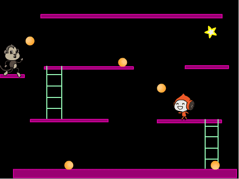
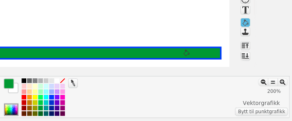
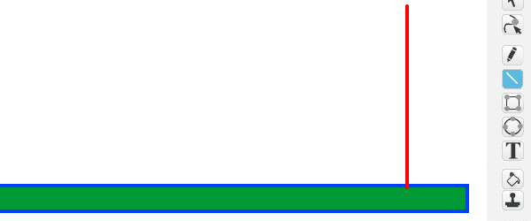
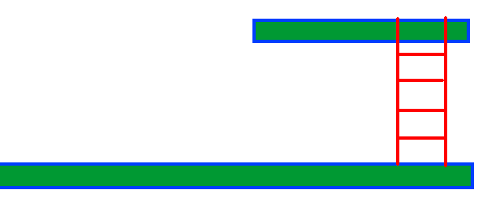

Donkey Kong var det første virkelig plattform-spillet da det ble gitt
ut i 1981. I tillegg til Donkey Kong var det også her vi første gang
ble kjent med Super Mario (som het Jumpman den gang). I spillet styrer
vi Super Mario mens han prøver å redde kjæresten sin fra Donkey Kong,
og må passe seg for tønner og ildkuler mens han hopper mellom
plattformer.

Oversikt over prosjektet
Mesteparten av kodingen av Donkey Kong skal du gjøre selv. Underveis
vil du lære hvordan du lager et enkelt plattform-spill i Scratch.
Plan
Steg 1: En hoppende helt
Den viktigste delen av et godt plattform-spill er å ha en helt man
kan styre rundt og hoppe fra plattform til plattform med.
I denne delen skal vi konsentrere oss om hvordan vi kan styre
heltefiguren, og spesielt hvordan vi får den til å hoppe og falle på
en troverdig måte.
Sjekkliste

når grønt flagg klikkes
sett størrelse til (40) %
begrens rotasjon [vend sideveis v]
Vi har også lagt til en kloss som passer på at Jumpman bare snur
seg mot høyre eller venstre.
Dersom ingenting påvirker figuren vår vil vi at (fartX) skal
gå mot 0 (farten bremses), mens vi vil at (fartY) skal bli et
stadig større negativt tall (figuren faller). Men om figuren står på
plattformen skal (fartY) være 0 (figuren står i ro). Dette kan
vi kode omtrent som følger:
når jeg mottar [nytt spill v]
gå til x: (-150) y: (-100)
for alltid // hovedløkken
sett [fartX v] til ((0.8) * (fartX)) // farten bremses
endre [fartY v] med (-0.5) // gravitasjon, figuren faller
hvis <berører fargen [#0000ff]> // figuren står på plattformen
sett [fartY v] til [0]
slutt
endre x med (fartX) // flytt selve figuren
endre y med (fartY)
slutt
hvis <tast [pil venstre v] trykket?>
pek i retning (-90 v)
sett [fartX v] til [-5]
neste drakt
slutt
Lag også en tilsvarende blokk for å flytte figuren mot høyre.
hvis <berører fargen [#0000ff]> // gammel kode: figuren står på plattformen
sett [fartY v] til [0]
hvis <tast [pil opp v] trykket?> // ny kode: figuren hopper
sett [fartY v] til [5]
slutt
slutt
Vi har nå et bra utgangspunkt for et plattformspill. Nemlig en figur
som vi kan styre rundt, og som kan hoppe når vi vil det. Lek litt med
Jumpman og tallene vi har brukt i sett [fartX v] til []- og
sett [fartY v] til []-klossene slik at du får en bevegelse du
synes virker naturlig.
hvis <berører fargen [#009900]>
endre y med (2)
slutt
Dette var også grunnen til at vi fylte plattformen med en annen
farge enn linjefargen.
Steg 2: Plattformer og stiger
Nå har vi en figur som kan springe og hoppe rundt på skjermen. La oss
lage flere plattformer den kan leke seg på.
Mens vi tegner flere plattformer er det viktig at vi bruker
Vektorgrafikk fordi dette gjør det lett å flytte plattformene rundt
etter at vi har tegnet dem.
Sjekkliste

Bruke linje-verktøyet og hold inne shift-knappen mens du
tegner for å få en helt rett linje.
hvis <berører fargen [#ff0000]?>
sett [fartY v] til [0]
hvis <tast [pil opp v] trykket?>
endre y med (3)
slutt
slutt
Med denne koden kan vi klatre opp stigen. Hvordan kommer vi oss ned
igjen? Kan du legge til en hvis <tast [pil ned v] trykket?>-test til slik at vi også kan klatre ned stigen?

Steg 3: Donkey Kong og rullende ildkuler
På tide med litt utfordringer! Nå skal vi programmere Donkey Kong til
å kaste rullende ildkuler mot oss.
Sjekkliste
når jeg starter som klon
gå til [Donkey Kong v]
sett [fartX v] til [3]
sett [fartY v] til (tilfeldig tall fra (0) til (5))
vis
Legg en gjenta til <(y-posisjon) < [-170]>-kloss nederst i
når jeg starter som klon-skriptet, og fyll denne med kode som
lar kulen falle, merker at ildkulen ligger på plattformen, og
flytter selve figuren.
Steg 4: Videreutvikling av spillet
Du har nå laget en enkel variant av Donkey Kong. Men prøv å gjøre
spillet morsommere ved å videreutvikle det. Du bestemmer selv hvordan
du vil jobbe videre, men nedenfor er noen ideer som kanskje kan være
til inspirasjon?
Ideer til videreutvikling
Forbedre denne siden
Funnet en feil? Kunne noe vært bedre? Hvis ja, vennligst gi oss tilbakemelding ved å lage en sak på Github eller fiks feilen selv om du kan. Vi er takknemlige for enhver tilbakemelding!